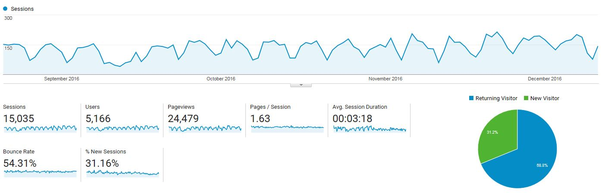
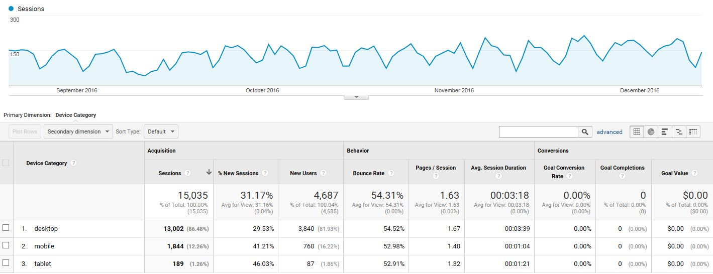
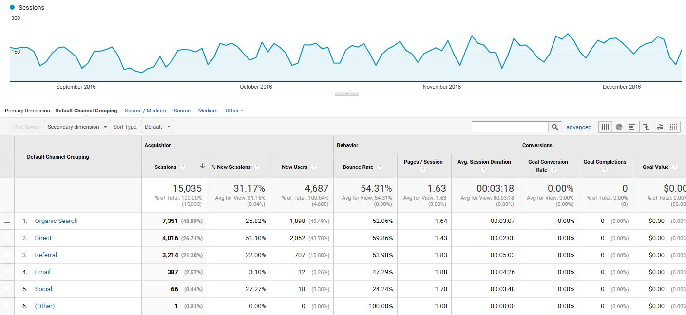
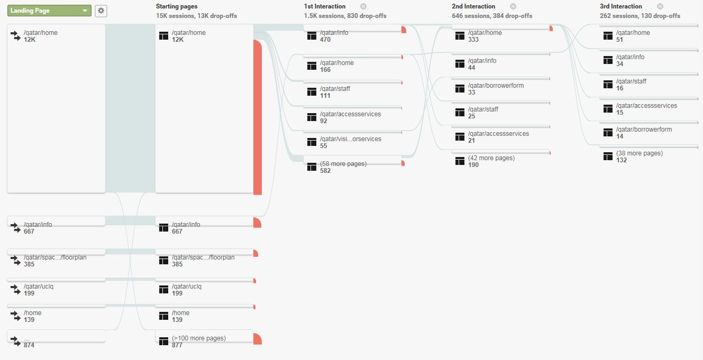

Course Guides
Overview of All Course Guides
Individual Guides
Sessions are users who visit the library website, even if for only one page and then leave for another website. The bounce rate reflects users who leave the website after landing on a page. This is expected since the library website's main purpose is to direct traffic to other resources.
Measure the type of device that is being used to access the library's website. The options include Desktop, Mobile, or Tablet. The vast majority of users access the library website from the desktop. This helps us to understand how much we should focus our time and resources on developing websites that are built to work best on a particular platform.
This measures how users come to the library's website. There are several categories.
Organic Traffic: From search engines where the user searches for the library website.
Direct Traffic: Direct visits come in a few different forms. Some people might have bookmarked a page on our website that they found interesting or useful and decided to return to our site later using that bookmark. This would be a considered a ‘direct’ visit. Someone who typed the URL.
Referred Visitors: If someone on another website clicks on a link pointing to the library website.
Email: Referred to the website via an email.
Social: This traffic comes from social media sources like Facebook.
This measures how users navigate through the library's website. Most users begin from the home page and either leave the library website or look for things like library information, staff information, information about borrowing (access services), and visitor services.
View the Gem of the Week webpage.